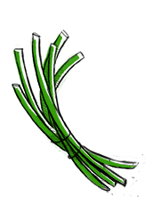

chives
Chives grow in clusters, with hollow leaves that come to a point. They have a mild onion flavor, which doesn't linger. They are a good source of calcium and iron.
Chives are used as a garnish, and as an aromatic herb. In cooking, it is best to add them at the end of the cooking process because they lose their flavor when heated. They have insect-repelling properties that can be ued in gardens to control pests. Chives can be stored in a bag in the refrigerator, if kept dry they will last up to a week.